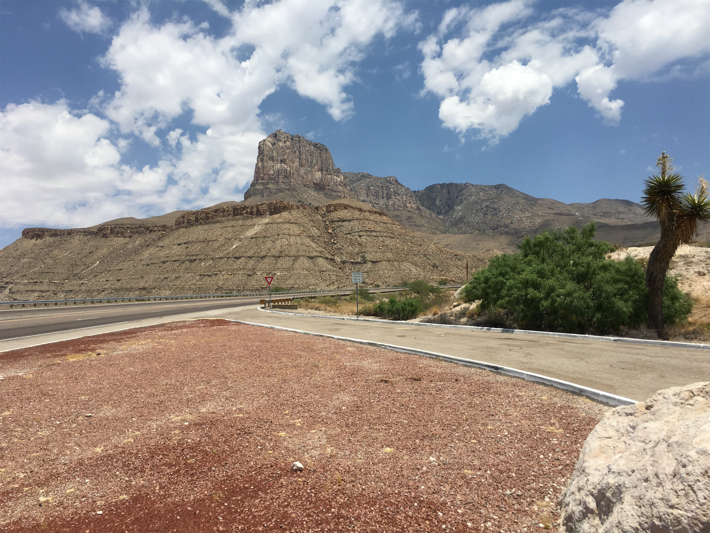
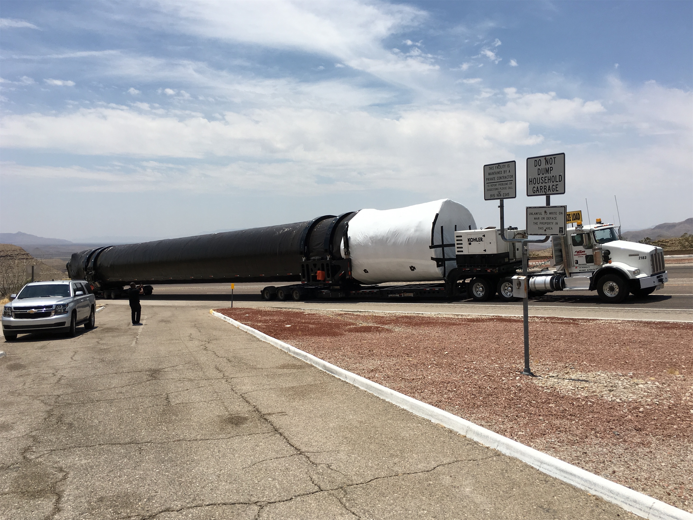
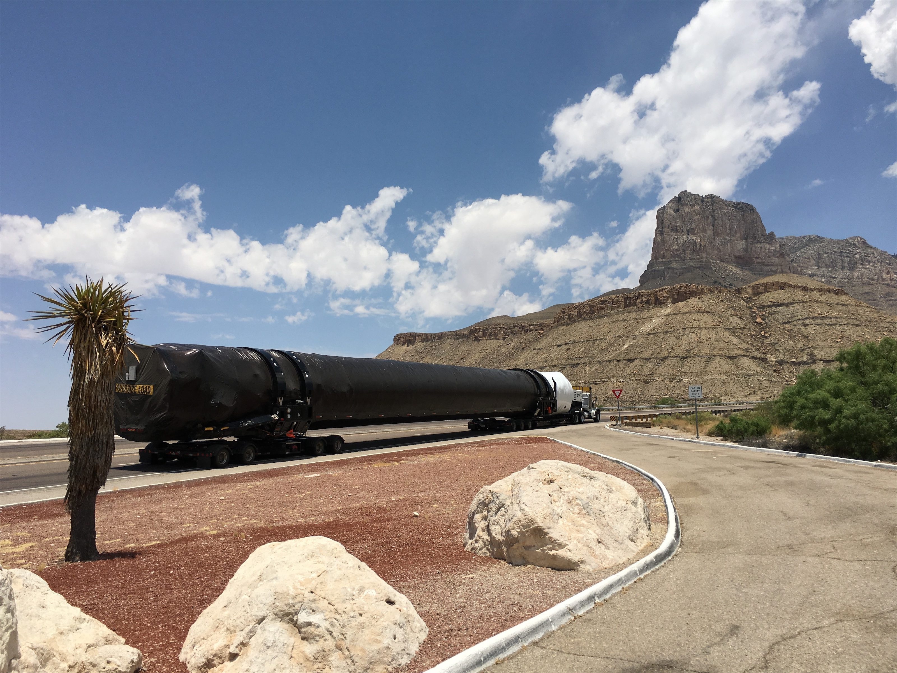
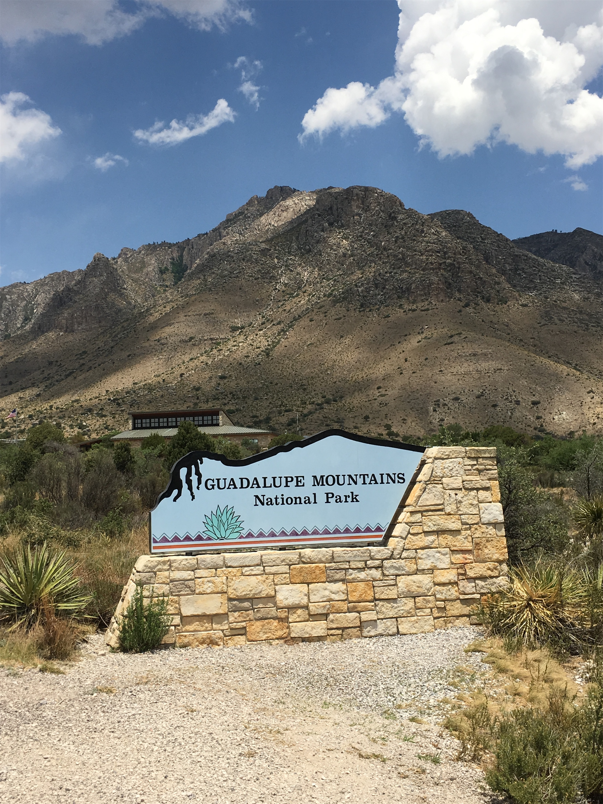

Friday, Jun 8, 2018, 1:52 PM CDT
Guadalupe Mountains National Park, Van Horn, TX, United States
88°F Sunny
88°F Sunny
![]()
6/8 Chisos Mountains Lodge, TX -> Guadalupe Mountains NP, TX 271 mi, 5.5 hr
6/8 Guadalupe Mountains NP, TX -> Whites City, NM 34 mi, 0.5 hr
Trip Total: 1,866 mi
Leaving Big Bend, we were stopped at the border control checkpoint. The agent was from Litchfield, MN! We chatted a bit and passed the geography test and were deemed lawful citizens. We headed back to sleepy Marathon, TX and then west along US Route 90, which alternated between mountains and desert before settling on a vast arid plain. The road paralleled a rail line and several trains with seemingly endless cars. Then, in the middle of nowhere, I saw a Prada store on the side of the road! A later google of “prada marfa” showed that it is a piece of public art. Marfa is also famous for mysterious sightings of colored, basketball-sized lights. We also passed a huge irrigated pecan orchard. At the town of Van Horn, we headed north on scenic highway 54, where we passed a number of beautiful and colorful mountain ranges.
Soon, the Guadalupe Mountain range came into view, and the unmistakable profile of El Capitan, the highest mountain in Texas at 8,751 ft, came into view. While pulled over to take a picture, a transportation crew came up behind us and said that we should stay for 10 minutes for a big surprise. It turns out that SpaceX rocket was making its way from a Texas test site to LA, and we got a picture!
The park itself is one of the least visited, and the main features are long hikes and climbs, so it didn’t offer much for us beyond the visitor’s center. We continued on to Whites City, NM to stay before tomorrow’s Carlsbad Caverns visit.



